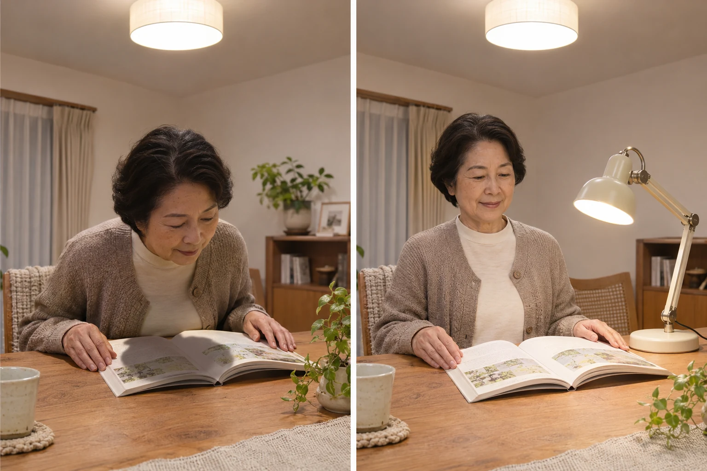

夕食のあと、いつもの席で本を開くと手元が暗い。天井の照明を明るくすると、今度はまぶしい。そんなとき、どんな灯りに替えればよいのか迷いますよね。
まず試したいのは、同じ本、同じ席で、光の向きと当たる場所を変えること。影・光源・紙面の反射を分けて見ると、手元灯で補えるのか、照明の位置から相談したいのかが分かります。今回は、夜の読書席を使いやすくする手順に絞って紹介します。
照明を買い替える前に。「まぶしい・影になる・映り込む」を解決しよう
公開日：
 文｜エイスケ（住宅と教育の専門家）
文｜エイスケ（住宅と教育の専門家）

夕食のあと、いつもの席で本を開くと手元が暗い。天井の照明を明るくすると、今度はまぶしい。そんなとき、どんな灯りに替えればよいのか迷いますよね。
まず試したいのは、同じ本、同じ席で、光の向きと当たる場所を変えること。影・光源・紙面の反射を分けて見ると、手元灯で補えるのか、照明の位置から相談したいのかが分かります。今回は、夜の読書席を使いやすくする手順に絞って紹介します。
ふだん使う椅子に座り、いつもの本や新聞を開きます。背筋を無理に伸ばしたり、顔を光へ近づけたりせず、普段の姿勢で確かめてください。
| 気になること | その場で試すこと |
|---|---|
| 頭や手の影が文字にかかる | 本や灯りの位置を少しずらし、影がどちらへ動くか見る |
| 顔を上げると電球やLEDがまぶしい | 座る向きや手元灯の角度を変え、光源が視界から外れるか見る |
| つやのある紙に白い光が映る | 本を少し傾け、光の映り込みが文字から外れるか見る |
同じ席でも、座る・背もたれに寄りかかる・横になると、目に入る光は変わります。ソファで読む人は、くつろぐ姿勢でも確かめてみてください。「立っていると平気なのに、座るとまぶしい」は、器具を選ぶときに伝えたい大切な情報です。
急に見え方が変わったり、目に痛みがあったりする場合は、照明の調整より先に眼科へ相談してください。
手元灯があれば、まず天井灯もつけた状態で試します。読み書きでは、利き手の反対側から照らす位置が出発点。右利きなら左側へ置き、ペンを動かして、手の影が文字にかからない位置へ調整します。

一度に位置も色も明るさも変えると、何がよかったのか分かりにくくなります。一つ変えて本を読む、という順で試すのがおすすめです。灯りを動かすときは説明書に従い、コードを通り道に渡さない配置にしてください。
手元を補う灯りを買うなら、まず向き・高さ・明るさを調整できるものを候補に。シェードなどで光源が直接見えにくいかも、自分の目線で確かめます。
売り場へは、普段読む本と、机・ソファまわりの写真を持っていくと相談しやすくなります。展示を試せる場合は、次の四つを確認しましょう。
クリップ式なら、挟む板の厚さや取り付け条件も確認します。充電式なら、使いたい明るさでの点灯時間と充電方法まで見ておくと、使い始めてから困りにくくなります。
調光は、読みやすい明るさに合わせる機能。調色は、暖かみのある色から白い色などへ変える機能です。色の好みと、本が読める明るさを別々に確認してください。

電球だけを替える場合は、口金のサイズに加え、器具の指定、密閉器具・調光器への対応も確認します。光を弱めるために布や紙で器具を覆うのは、発熱などの危険があるため避けてください。
手元灯を置く場所がない、コンセントからコードを引くと通路を横切る、どの席でも天井の光がまぶしい。そんな場合は、器具の位置・スイッチ・コンセントをまとめて見直す相談へ進みます。
相談では、読んでいる席から見た照明の写真と、椅子・本・灯りの位置関係が分かる写真を一枚ずつ用意すると便利です。写真は配置の説明に使い、「ここに座ると、顔を上げたときにまぶしい」と言葉も添えましょう。写真の明るさだけでは、実際の見え方は判断できません。
「夜はこの椅子で新聞を読みます。手元灯を左に置くと読みやすくなりましたが、コードが通路に出ます。この位置で使えるようにできますか？」
内装を仕上げる前に家具の位置まで伝えておくと、必要な場所へ配線を計画しやすくなります。固定配線の変更は電気工事業者に任せましょう。
困った姿勢・場面：＿＿
変えてみた灯りの位置：＿＿
よくなった点／まだ気になる点：＿＿
周囲が真っ暗な状態で手元だけ強く照らすと、明暗の差が大きくなります。天井灯なども使い、周囲と手元の明るさを一緒に調整してください。
光が届く範囲や目に入る角度でも見え方は変わります。数値とあわせて、いつもの距離と姿勢で本を読めるかを試しましょう。
目の状態や眼鏡が関係することもあります。見えにくさが続く場合は眼科へ相談を。急な変化や痛みがあれば、早めの受診を優先してください。
「この席で本を読むと、どの光が気になる？」。同じ灯りでも感じ方は違います。それぞれがいつもの姿勢で試すと、共有したい条件が見つかります。
暮らしの場面・構成の参考
照明・見え方の確認先
天井・壁の照明器具、手元灯、調光に対応した照明、スイッチと配線
部屋・建材・設備から機能を確かめる ↗関連記事
この記事を書いた人｜エイスケ
1986年生まれ。実家の工務店・不動産に10年間従事したのち、教育の世界へ。住宅と教育、両方の視点から「豊かな暮らし」をテーマに執筆します。※本コラムは筆者個人の見解・経験に基づくものです。最終的な判断は各分野の専門家にご相談ください。